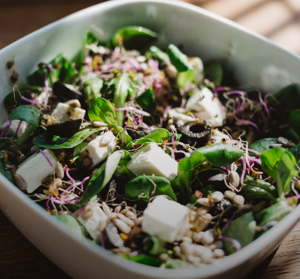

CHOCOLATE MOUSE
 25 min
25 min
This delicious chocolate mousse will delight dinner guests of all ages!
SMOKED LAMB WITH RICE
120 min
Want to feel like your favorite relative came over and made you dinner? This comfort meal of smoked lamb and rice will quickly become a weekend favorite!

GOAT CHEESE SALAD
25 min
In addition to the full flavor of goat cheese, this salad includes kale, avocado, and farro to balance it out.

CHICKEN SANDWHICH
45 min
We've packed a lot into this one - shredded cabbage, carmalized onions, deep-fried chicken, chipotle mayo, half-sour pickles, and a toasted sesame bun will leave you thoroughly satisfied!

SWEET CHURROS
90 min
Making this classic summer treat at home will remind you of a childhood spent in the park.

BERRY PARFAIT
10 min
This low-calorie, vitamin-packed parfait is great for breakfast, dessert, or post-workout!